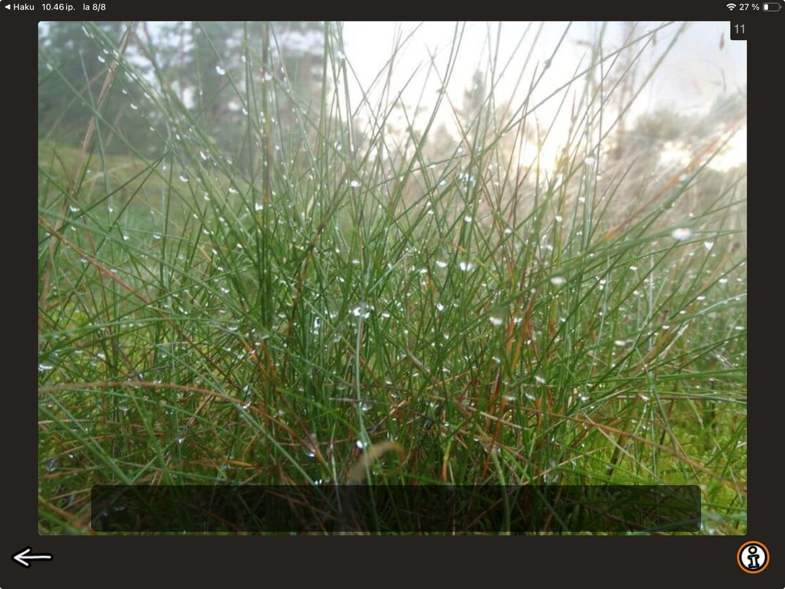

Next up in the Speech Production category is Descriptive Sentence.

This exercise is all about rich, vivid, elaborate, and gloriously indulgent expression. So, in the spirit of the task, let's make this post considerably more lush than the last one.

The ability to use vivid, descriptive language is essential for rich conversation and storytelling, and can be a great challenge for clients who perform beautifully overall.
The task itself is straightforward: show the client a picture and ask them to produce one or two descriptive sentences about what they see. Encourage the use of multiple adjectives and invite them to express themselves freely (having a generous, ready-to-use list of colourful adjectives on hand can be a wonderful support).
Tapping the black bar at the bottom of the screen reveals a sample sentence for the image. These illustrate the type of lavish, descriptive response the task is aiming for, and serve as inspiring examples to help the client get started. Bear in mind that they are not the only acceptable answers, just examples that are carved out to show what an elaborate, descriptive sentence could look like.
Descriptive Sentence -task challenges both cognitive and linguistic flexibility. It is excellent for stretching into more abstract, imaginative language use. It can be a perfect fit for clients who are capable but tend to be passive in their interactions and limit themselves to, even rigid functional vocabulary. When you want to work on adding some flesh to the efficient, bare-bones sentences or when you feel that your client just needs a gentle push into tapping into the colors of their vocabulary, this task can be a valuable tool. Sometimes going overboard is just what you need to strike a good balance!
When working on this task, I recommend grabbing a piece of paper and writing the sentences down. Writing makes the work visible and delightfully concrete. This allows for unhurried review and comparison across sessions. Seeing the difference between an early attempt and a later one can make progress wonderfully, tangibly visible. Working in parallel with the sister task Precise sentence allows for comparison of plain language versus detailed language making the richness and expressiveness of these sentences tangible. Remember to include the date in your notes to track progress!
There you go — a gloriously wordy task for when one plain, lonely word will simply not do.